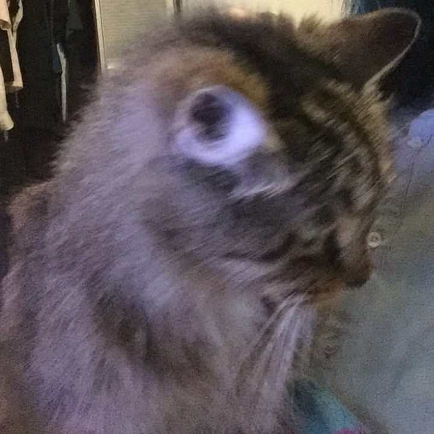

I was born July 26, 1993 in Sacramento, California. I am currently located in Los Angeles, but have spent a majority of my life in Sacramento. I graduated from University of California, Los Angeles in 2015 with a BS in Mathematics. I'm currently supplementing this education with a course in Web Development. So far I've studied C++, HTML, CSS, and JavaScript.
In my free time, I try to visit the gym as often as possible. I am very passionate about rock climbing and have been going to the rock climbing gym at least 4 days a week for the past 7 months. Other hobbies and interests of mine include video games, anime, fashion, cooking, baking, sleeping, and animals. I have a single cat, pictured right. Her name is Cleo and I've had her all of her life, about 18 years. I have been vegan for over 5 years and try to be involved with animal rights activism when I can.